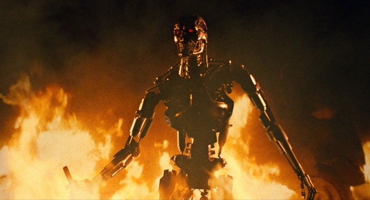
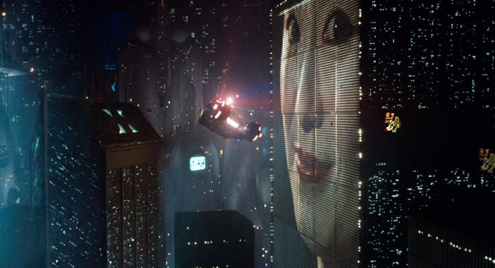
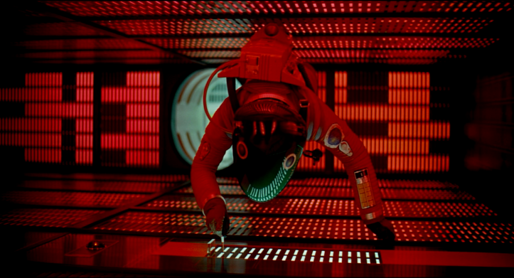

Os 5 melhores filmes de Ficção Científica
O gênero de ficção cientifica sempre me conquistou, trazendo histórias emocionantes, que me fazem refletir sobre uma série de temas, como o existencialismo, e o avanço da tecnologia e seus efeitos em relação a sociedade.
Listei a baixo os meus 5 filmes favoritos que envolvem esse tema.
5. Mad Max: Fury Road
Em um futuro pós-apocalíptico, totalmente tomado pelo caos, um guerreiro das estradas acaba tendo que ajudar um grupo de garotas envolvidas em uma guerra mortal, iniciada pela Imperatriz Furiosa.
Apesar dos 3 primeiros filmes excelentes com o Mel Gibson, em Fury Road, o diretor George Miller consegue se superar em vários aspectos, e entregar, na minha opinião, sua maior obra prima.
4. O Exterminador do Futuro
Em 2029, a guerra entre humanos e máquinas foi deflagrada. Com a tecnologia a seu dispor, as máquinas decidem enviar ao passado um cyborg com a missão de matar a mãe daquele que viria a se transformar no líder da resistência humana. Contudo, os humanos também conseguem enviar um representante para proteger a mulher e tentar garantir o futuro da humanidade.
Conheci o Exterminador no segundo filme, e só depois de alguns anos consegui assistir o primeiro, imediatamente acabei gostando mais de ver o Arnold Schwarzenegger como vilão, e do tom mais sombrio. E é claro que meu amor pelos anos 80 (O filme se passa no ano de 1984) também me influenciou a gostar mais desse. Os dois primeiros filmes foram dirigidos pelo brilhante James Cameron.
3. Matrix
Thomas Anderson (Keanu Reeves), um jovem programador de computador que mora em um cubículo escuro, é atormentado por estranhos pesadelos nos quais encontra-se conectado por cabos e contra sua vontade, em um imenso sistema de computadores do futuro. Em todas essas ocasiões, acorda gritando no exato momento em que os eletrodos estão para penetrar em seu cérebro. À medida que o sonho se repete, Anderson começa a ter dúvidas sobre a realidade. Por meio do encontro com os misteriosos Morpheus (Laurence Fishburne) e Trinity (Carrie-Anne Moss), Thomas descobre que é, assim como outras pessoas, vítima do Matrix, um sistema inteligente e artificial que manipula a mente das pessoas, criando a ilusão de um mundo real enquanto usa os cérebros e corpos dos indivíduos para produzir energia. Morpheus, entretanto, está convencido de que Thomas é Neo, o aguardado messias capaz de enfrentar o Matrix e conduzir as pessoas de volta à realidade e à liberdade.
Escrito e dirigido pelas irmãs Wachowski, The Matrix, mudou para sempre o jeito de se fazer filmes de ação. A camera lenta e as cenas de lutas extremamente coreografadas e muito bem inspiradas em diversos clássicos dos filmes chineses de artes marciais, por exemplo, são, talvez, a parte mais notável desse aspecto.
E além da ação expetacular o filme também aborda temas complexos de filosofia idealista platônica, fazendo claras referências à alegoria da caverna, de Platão.
2. Blade Runner
No início do século 21, a THE TYRELL CORPORATION levou a evolução robótica para a fase NEXUS - um ser virtualmente idêntico a um humano - conhecido como Replicante. Os Replicantes NEXUS 6 eram superiores em força e agilidade, e no minimo tão inteligentes quanto os engenheiros genéticos que os criaram. Os Replicantes foram usados fora da Terra como escravos, na arriscada exploração e colonização de outros planetas. Após um motim sangrento de uma equipe de combate NEXUS 6 em uma colônia fora do mundo, os Replicantes foram declarados ilegais na Terra - sob pena de morte. Esquadrões especiais de polícia - UNIDADES BLADE RUNNER - tinham ordens de atirar para matar quando detectassem qualquer Replicante transgressor. Isso não era chamado de execução. E sim retirada.
Com esse texto, que inicia uns dos melhores filmes de todos os tempos. Dirigido por Ridley Scott e com o carismatico Harrison Ford como protagonista, o filme aborda temas complexos como o direito à vida. Mais precisamente, no que concerne a própria noção de vida. Ao criar os replicantes, androides “mais humanos que os humanos”, temos o direito de usá-los como ferramentas? Uma criatura capaz de desenvolver sentimentos é inferior a nós por ter sido criada a partir de nosso conhecimento? Essas são algumas das reflexões que essa obra prima traz.
1. 2001 Uma Odisseia No Espaço
Desde a "Aurora do Homem", um misterioso monolito negro parece emitir sinais de outra civilização interferindo no nosso planeta. Quatro milhões de anos depois, no século XXI, uma equipe de astronautas liderados pelo experiente David Bowman (Keir Dullea) e Frank Poole (Gary Lockwood) é enviada à Júpiter para investigar o enigmático monolito na nave Discovery, totalmente controlada pelo computador HAL 9000. Entretanto, no meio da viagem HAL entra em pane e tenta assumir o controle da nave.
Em 29 de abril de 1968 chegava aos cinemas uma obra-prima. Da colaboração entre Stanley Kubrick e Arthur C. Clarke, nascia o épico espacial que se tornaria um marco cinematográfico, considerado um dos melhores e mais influentes longas da história - sendo o #6 na lista da Sight & Sound dos melhores filmes de todos os tempos.
Parcialmente inspirado no conto A Sentinela de Clarke, 2001 - Uma Odisséia no Espaço trata com apuro científico temas como a evolução humana, tecnologia, inteligência artificial e vida extraterrestre. O pioneirismo e a qualidade dos seus efeitos especiais foram premiados com o Oscar e criaram um novo (e alto) parâmetro para as ficções científicas. Sempre que revejo essa obra, o filme cresce mais em meu conceito.